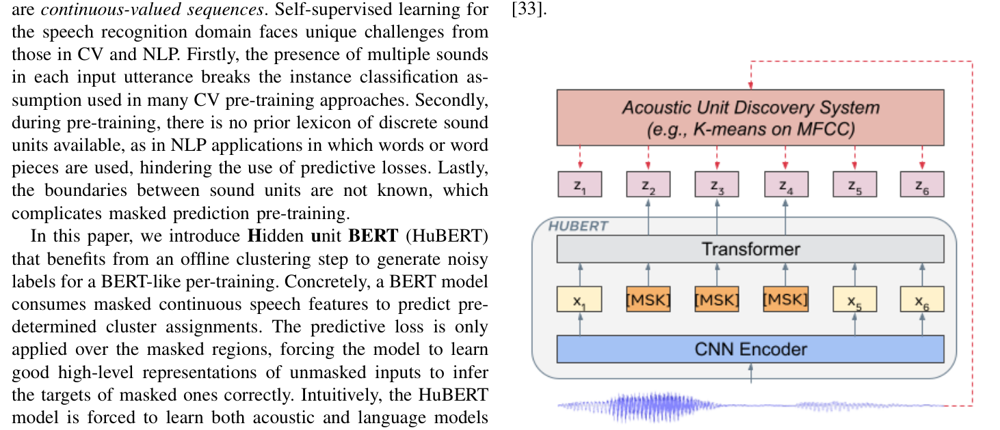
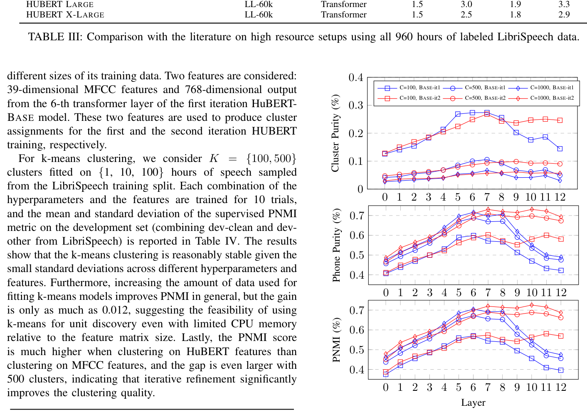
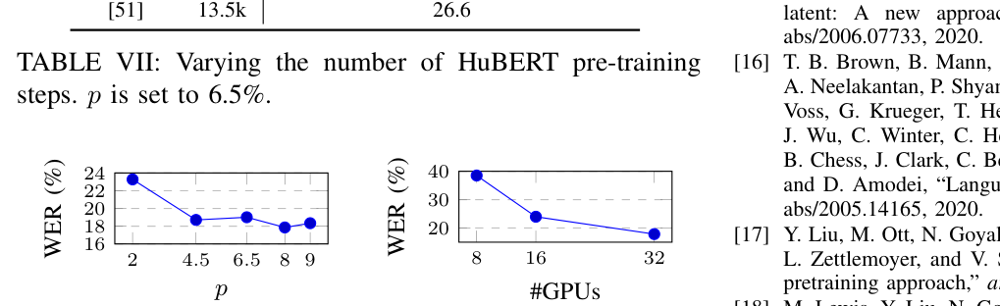

Wei-Ning Hsu, Benjamin Bolte, Yao-Hung Hubert Tsai, Kushal Lakhotia, Ruslan Salakhutdinov, Abdelrahman Mohamed
摘要Abstract
Self-supervised approaches for speech representa-
（本句为断行残句，完整译文见下句。）
tion learning are challenged by three unique problems: (1) there are multiple sound units in each input utterance, (2) there is no lexicon of input sound units during the pre-training phase, and (3) sound units have variable lengths with no explicit segmentation. To deal with these three problems, we propose the Hidden-Unit BERT (HuBERT) approach for self-supervised speech representation learning, which utilizes an offline clustering step to provide aligned target labels for a BERT-like prediction loss. A key ingredient of our approach is applying the prediction loss over the masked regions only, which forces the model to learn a combined acoustic and language model over the continuous inputs. HuBERT relies primarily on the consistency of the unsupervised clustering step rather than the intrinsic quality of the assigned cluster labels. Starting with a simple k-means teacher of 100 clusters, and using two iterations of clustering, the HuBERT model either matches or improves upon the state-ofthe-art wav2vec 2.0 performance on the Librispeech (960h) and Libri-light (60,000h) benchmarks with 10min, 1h, 10h, 100h, and 960h fine-tuning subsets. Using a 1B parameter model, HuBERT shows up to 19% and 13% relative WER reduction on the more challenging dev-other and test-other evaluation subsets.1 Index Terms—Self-supervised learning, BERT.
语音表示学习的自监督方法面临 3 个独特难题：(1) 每条输入语音中包含多个声学单元；(2) 预训练阶段不存在输入声学单元的词表；(3) 声学单元长度可变，且没有显式的切分边界。为应对这 3 个问题，我们提出用于自监督语音表示学习的隐藏单元 BERT（Hidden-Unit BERT，HuBERT）方法，它利用一个离线聚类步骤，为类 BERT 的预测损失提供对齐的目标标签。我们方法的一个关键要素是将预测损失只施加在被掩码的区域上，这迫使模型在连续输入上同时学习一个声学模型和一个语言模型。HuBERT 主要依赖无监督聚类步骤的一致性，而非所分配聚类标签本身的内在质量。从一个仅有 100 个簇的简单 k-means 教师出发，经过两轮聚类迭代，HuBERT 在 Librispeech（960h）和 Libri-light（60,000h）基准上、在 10min、1h、10h、100h 和 960h 的各微调子集上，都达到或超过了当时最优的 wav2vec 2.0 的性能。使用 1B 参数的模型，HuBERT 在更具挑战性的 dev-other 和 test-other 评测子集上取得了最高 19% 和 13% 的相对 WER 降低。（代码、预训练与微调模型开源于 fairseq 的 examples/hubert 目录。）关键词：自监督学习，BERT。
I 引言INTRODUCTION
The north star for many research programs has been learning speech and audio representations through listening and interaction, similar to how babies learn their first language. High fidelity speech representation includes disentangled aspects of the spoken content along with non-lexical information of how it is delivered, e.g., speaker identity, emotion, hesitation, interruptions. Furthermore, reaching a complete situational understanding requires modeling structured noise interleaving and overlapping with the speech signal, e.g., laughter, coughing, lip-smacking, background vehicle engine, birds chirping, or food sizzling sounds.
许多研究计划的北极星，是让机器通过聆听和交互来学习语音与音频的表示，就像婴儿习得母语那样。高保真的语音表示既包含与语音内容解耦的各个侧面，也包含内容如何被表达的非词汇信息，例如说话人身份、情绪、迟疑、打断等。此外，要达到完整的情境理解，还需要对与语音信号交织、重叠的结构化噪声建模，例如笑声、咳嗽声、咂嘴声、背景中的车辆引擎声、鸟鸣声或食物的滋滋声。
The need for such high-fidelity representations drove research in self-supervised learning for speech and audio where the targets driving the learning process of a designed pretext task are drawn from the input signal itself. Examples of pretext tasks for self-supervised speech representation learning include distinguishing near-by features from temporally distant ones [1]–[3], next-step prediction of audio features [4], masked prediction of audio features given unmasked context [5], [6]. Besides, self-supervised learning methods do not rely on any linguistic resources during training, allowing them to learn 1The code, pre-trained and fine-tuned models are available at https:// github.com/pytorch/fairseq/tree/master/examples/hubert. universal representations since labels, annotations, and textonly material ignores rich information in the input signal.
对这种高保真表示的需求推动了语音与音频自监督学习的研究：在设计好的前置任务中，驱动学习过程的目标取自输入信号本身。语音表示自监督学习的前置任务例子包括：区分时间上相近的特征与遥远的特征 [1]–[3]、对音频特征做下一步预测 [4]、在给定未掩码上下文的情况下对被掩码的音频特征做掩码预测 [5]、[6]。此外，自监督学习方法在训练中不依赖任何语言学资源，因而能够学到通用的表示——标签、标注和纯文本材料都忽略了输入信号中丰富的信息。（脚注 1：代码、预训练与微调模型见 https://github.com/pytorch/fairseq/tree/master/examples/hubert。）
Learning speech representations without reliance on large volumes of labeled data is crucial for industrial applications and products with ever-increasing coverage of new languages and domains. The time needed to collect large labeled datasets covering each of these scenarios is the real bottleneck in the current fast-moving AI industry, with time-to-market playing a critical role for product success. Building more inclusive applications covering spoken-only dialects and languages is another significant benefit of reducing dependence on linguistic resources. Given their non-standard orthographic rules, many of these languages and dialects have very little or no resources at all.
在工业应用与产品中，新语言和新领域的覆盖不断扩大，不依赖大规模标注数据来学习语音表示至关重要。为上述每一种场景收集大规模标注数据集所需的时间，是当今快速迭代的 AI 产业中真正的瓶颈——上市时间对产品成败起着关键作用。降低对语言学资源的依赖还有另一大好处：能构建覆盖纯口语方言与语言的、更具包容性的应用。由于这些语言和方言的书写规则并不规范，其中许多几乎没有或完全没有可用的语言学资源。
Pseudo-labeling (PL), also known as self-training and belongs to the family of semi-supervised learning techniques, has been the dominant approach for utilizing unlabeled speech and audio with successful applications dating back to the mid1990s [7]–[10]. PL starts with some supervised data to train a ”teacher” model in one specific downstream task. Pseudolabels are then generated for the unlabeled data using the teacher model. Next, a student model is trained using the combined supervised and teacher-labeled data either using the standard cross-entropy [9] loss or using a contrastive loss [11] to account for noise in teacher-generated labels. The pseudolabeling process may be repeated multiple times to improve teacher label quality [12] iteratively.
伪标注（Pseudo-labeling，PL），又称自训练，属于半监督学习技术家族，自 1990 年代中期以来一直是利用无标注语音与音频的主流方法，并有许多成功应用 [7]–[10]。PL 先用一部分监督数据，在某个特定的下游任务上训练一个「教师」模型。然后用教师模型为无标注数据生成伪标签。接着，用监督数据与教师标注数据的合集训练一个学生模型，既可以使用标准的交叉熵损失 [9]，也可以使用对比损失 [11] 来容忍教师生成标签中的噪声。伪标注过程可以重复多轮，以迭代地提升教师标签的质量 [12]。
Without discounting the immense success of pseudolabeling techniques, self-supervised representations offer two unique advantages: (1) Pseudo-label methods force student models to merely mimic a teacher model, which is limited by its supervised data size and the provided annotation quality. On the other hand, self-supervised pretext tasks force the model to represent the entire input signal by compressing much more bits of information into the learned latent representation. (2) In pseudo-labeling, the supervised data of the teacher model forces the whole learning to be geared towards a single downstream task. On the contrary, self-supervised features show better generalization to a multitude of downstream applications.
我们并不否认伪标注技术的巨大成功，但自监督表示提供了两个独特的优势：（1）伪标注方法迫使学生模型仅仅模仿教师模型，而教师受限于其监督数据的规模和标注质量。另一方面，自监督前置任务迫使模型对整个输入信号建模，把多得多的信息比特压缩进学到的隐表示中。（2）在伪标注中，教师模型的监督数据迫使整个学习过程面向单一下游任务。相反，自监督特征对众多下游应用表现出更好的泛化能力。
There have been impressive successes for self-supervised learning in Computer Vision (CV) [13]–[15] and Natural Language Processing (NLP) [16]–[18] applications. Learning representations of discrete input sequences, such as in Natural Language Processing (NLP) applications, uses either masked prediction [19], [20] or auto-regressive generation [18], [21] of input sequences with partial obfuscation. For continuous inputs, such as in Computer Vision (CV) applications, representations are often learned through instance classification, in which each image and its augmentations are treated as a single output class to be pulled together [14], [15] or contrasted against other negative samples [22].
自监督学习在计算机视觉（CV）[13]–[15] 和自然语言处理（NLP）[16]–[18] 应用中都取得了令人瞩目的成功。对离散输入序列的表示学习（如 NLP 应用），通常采用对部分混淆的输入序列做掩码预测 [19]、[20] 或自回归生成 [18]、[21]。对连续输入（如 CV 应用），表示通常通过实例分类来学习：每张图像及其增强版本被当作一个独立的输出类别，要么彼此拉近 [14]、[15]，要么与其他负样本对比拉远 [22]。
Speech signals differ from text and images in that they are continuous-valued sequences. Self-supervised learning for the speech recognition domain faces unique challenges from those in CV and NLP. Firstly, the presence of multiple sounds in each input utterance breaks the instance classification assumption used in many CV pre-training approaches. Secondly, during pre-training, there is no prior lexicon of discrete sound units available, as in NLP applications in which words or word pieces are used, hindering the use of predictive losses. Lastly, the boundaries between sound units are not known, which complicates masked prediction pre-training.
语音信号不同于文本和图像之处在于：它是连续取值的序列。因此，语音识别领域的自监督学习面临与 CV 和 NLP 不同的独特挑战。首先，每条输入语音中存在多个声音，这打破了许多 CV 预训练方法所依赖的实例分类假设。其次，预训练期间没有像 NLP 应用那样可用的离散声学单元先验词表（NLP 中使用词或子词），这阻碍了预测式损失的使用。最后，声学单元之间的边界是未知的，这让掩码预测式预训练变得更加复杂。
In this paper, we introduce Hidden unit BERT (HuBERT) that benefits from an offline clustering step to generate noisy labels for a BERT-like per-training. Concretely, a BERT model consumes masked continuous speech features to predict predetermined cluster assignments. The predictive loss is only applied over the masked regions, forcing the model to learn good high-level representations of unmasked inputs to infer the targets of masked ones correctly. Intuitively, the HuBERT model is forced to learn both acoustic and language models from continuous inputs. First, the model needs to model unmasked inputs into meaningful continuous latent representations, which maps to the classical acoustic modeling problem. Second, to reduce the prediction error, the model needs to capture the long-range temporal relations between learned representations. One crucial insight motivating this work is the importance of consistency of the targets, not just their correctness, which enables the model to focus on modeling the sequential structure of input data. Our approach draws inspiration from the DeepCluster method for self-supervised visual learning [23]; however, HuBERT benefits from the masked prediction loss over speech sequences to represent their sequential structure.
本文提出隐藏单元 BERT（HuBERT），它借助一个离线聚类步骤为类 BERT 的预训练生成带噪标签。具体来说，一个 BERT 模型以被掩码的连续语音特征为输入，预测预先确定的聚类分配。预测损失只施加在被掩码的区域上，迫使模型为未掩码输入学到好的高层表示，从而能正确推断被掩码部分的目标。直观地说，HuBERT 模型被迫从连续输入中同时学习声学模型和语言模型。其一，模型需要把未掩码输入建模成有意义的连续隐表示，这对应经典的声学建模问题。其二，为了降低预测误差，模型需要捕捉所学表示之间的长程时间关系。激发本工作的一个关键洞见是：目标的一致性比其正确性更重要——一致性使模型能专注于对输入数据的序列结构建模。我们的方法受到自监督视觉学习方法 DeepCluster [23] 的启发；但 HuBERT 借助语音序列上的掩码预测损失来刻画其序列结构。
When the HuBERT model is pre-trained on either the standard Librispeech 960h [24] or the Libri-Light 60k hours [25], it either matches or improves upon the state-of-theart wav2vec 2.0 [6] performance on all fine-tuning subsets of 10mins, 1h, 10h, 100h, and 960h. We present systematic results on three model sizes pre-trained with HuBERT: BASE (90M parameters), LARGE (300M), and X-LARGE (1B). The X-LARGE model shows up to 19% and 13% relative WER improvement from LARGE models on dev-other and test-other evaluation subsets when pre-trained on the Libri-Light 60k hours.
当 HuBERT 模型在标准的 Librispeech 960h [24] 或 Libri-Light 60k 小时 [25] 上预训练时，它在 10mins、1h、10h、100h 和 960h 全部微调子集上都达到或超过了当时最优的 wav2vec 2.0 [6] 的性能。我们给出了三种模型规模上 HuBERT 预训练的系统结果：BASE（90M 参数）、LARGE（300M）和 X-LARGE（1B）。在 Libri-Light 60k 小时上预训练时，X-LARGE 模型在 dev-other 和 test-other 评测子集上相对 LARGE 模型取得了最高 19% 和 13% 的 WER 改进。
II 方法METHOD
A 为 HuBERT 学习隐藏单元Learning the Hidden Units for HuBERT
An acoustic model trained on text and speech pairs provides pseudo-phonetic labels for each frame via forced alignment in semi-supervised learning. On the contrary, the self-supervised representation learning setup has access to speech-only data. Nevertheless, simple discrete latent variable models such as k-means and Gaussian mixture models (GMMs) infer hidden units that exhibit non-trivial correlation with the underlying acoustic units [26] (see also Table V). More advanced systems can achieve better acoustic unit discovery performance using better graphical models [27], [28] or parameterizes the distributions with more powerful neural network models [29]–
在半监督学习中，一个用文本-语音对训练的声学模型可以通过强制对齐为每一帧提供伪音素标签。相比之下，自监督表示学习只能拿到纯语音数据。尽管如此，k-means、高斯混合模型（GMM）等简单的离散隐变量模型所推断出的隐藏单元，与底层声学单元之间表现出非平凡的相关性 [26]（另见 Table V）。更先进的系统可以通过更好的图模型 [27]、[28]，或用更强大的神经网络模型来参数化这些分布 [29]–[33]，取得更好的声学单元发现性能。

图Fig. 1: The HuBERT approach predicts hidden cluster assignments of the masked frames (y2, y3, y4 in the figure) generated by one or more iterations of k-means clustering.
图 1：HuBERT 方法预测被掩码帧（图中的 y2、y3、y4）的隐藏簇分配，这些分配由一轮或多轮 k-means 聚类生成。
Inspired by this, we propose to use acoustic unit discovery models to provide frame-level targets. Let X denote a speech utterance X = [x1, · · · , xT ] of T frames. Discovered hidden units are denoted with h(X) = Z = [z1, · · · , zT ], where zt ∈[C] is a C-class categorical variable and h is a clustering model, e.g. k-means.
受此启发，我们提出用声学单元发现模型来提供帧级目标。记一段语音为 X = [x1, · · · , xT]，共 T 帧。发现的隐藏单元记为 h(X) = Z = [z1, · · · , zT]，其中 zt ∈ [C] 是取 C 类的类别变量，h 是一个聚类模型，例如 k-means。
B 通过掩码预测学习表示Representation Learning via Masked Prediction
Let M ⊂[T] denote the set of indices to be masked for a length-T sequence X, and ˜X = r(X, M) denote a corrupted version of X where xt is replaced with a mask embedding ˜x if t ∈M. A masked prediction model f takes as input ˜X and predicts a distribution over the target indeces at each timestep pf(· | ˜X, t). There are two decisions to be made for masked prediction: how to mask and where to apply the prediction loss.
记 M ⊂ [T] 为一条长度 T 序列 X 中被掩码的下标集合，记 X̃ = r(X, M) 为 X 的受损版本——若 t ∈ M，则 xt 被替换为掩码嵌入 x̃。掩码预测模型 f 以 X̃ 为输入，在每个时间步预测目标下标的分布 pf(· | X̃, t)。掩码预测需要做出两个决定：如何掩码，以及在何处施加预测损失。
Regarding the first decision, we adopt the same strategies used in SpanBERT [34] and wav2vec 2.0 [6] for mask generation, where p% of the timesteps are randomly selected as start indices, and spans of l steps are masked. To address the second decision, we denote the cross-entropy loss computed over masked and unmasked timesteps as Lm and Lu, respectively. Lm is defined as:
关于第一个决定，我们采用 SpanBERT [34] 和 wav2vec 2.0 [6] 中相同的掩码生成策略：随机选取 p% 的时间步作为起始下标，并掩码长度为 l 步的连续片段。针对第二个决定，我们把在被掩码时间步上计算的交叉熵损失记为 Lm，在未掩码时间步上计算的记为 Lu。Lm 定义为：
t∈M log pf(zt | ˜X, t), (1)Lm(f; X, M, Z) = Xand Lu is of the same form except that it sums over t ̸∈ M. The final loss is computed as a weighted sum of the two terms: L = αLm + (1 −α)Lu. In the extreme case when α = 0, the loss is computed over the unmasked timesteps, which is similar to acoustic modeling in hybrid speech recognition systems [35]–[38]. In our setup, this limits the learning process to mimicking the clustering model.
Lu 的形式相同，只是求和范围换成 t ∉ M。最终损失是两项的加权和：L = αLm + (1 − α)Lu。在 α = 0 的极端情况下，损失只在未掩码时间步上计算，这类似于混合式语音识别系统中的声学建模 [35]–[38]。在我们的设定下，这会把学习过程限制为仅仅模仿聚类模型。
In the other extreme with α = 1, the loss is only computed over the masked timesteps where the model has to predict the targets corresponding to the unseen frames from context, analogous to language modeling. It forces the model to learn both the acoustic representation of unmasked segments and the long-range temporal structure of the speech data. We hypothesize that the setup with α = 1 is more resilient to the quality of cluster targets, which is demonstrated in our experiments (see Table V).
在另一个极端 α = 1 下，损失只在被掩码的时间步上计算，模型必须从上下文推断出那些不可见帧对应的目标，这类似于语言建模。这迫使模型同时学习未掩码片段的声学表示和语音数据的长程时间结构。我们假设 α = 1 的设定对聚类目标的质量更鲁棒，实验也证实了这一点（见 Table V）。
C 用簇集成学习Learning with Cluster Ensembles
A simple idea to improve target quality is to utilize multiple clustering models. While an individual clustering model may perform terribly, cluster ensembles can provide complementary information to facilitate representation learning. For example, an ensemble of k-means models with different codebook sizes can create targets of different granularity, from manner classes (vowel/consonant) to sub-phone states (senones). To extend the proposed framework, let Z(k) be the target sequences generated by the k-th clustering model. We can now re-write Lm as: k log p(k) f (z(k) t | ˜X, t), (2)
提升目标质量的一个简单想法是使用多个聚类模型。单个聚类模型可能表现很差，但簇集成可以提供互补信息，促进表示学习。例如，用不同码本大小的 k-means 模型做集成，可以产生不同粒度的目标：从发音方式类别（元音/辅音）到子音素状态（senone）。为扩展所提框架，记 Z(k) 为第 k 个聚类模型生成的目标序列。现在可以把 Lm 重写为公式 (2) 的形式（对所有簇模型的预测对数似然求和）。
Lm(f; X, {Z(k)}k, M) = XXt∈Mand similarly for the unmasked loss Lu. This is analogous to multi-task learning, but with tasks created by unsupervised clustering.
未掩码损失 Lu 也类似。这类似于多任务学习，只不过任务是由无监督聚类创造出来的。
Additionally, ensembling is intriguing because it can be used alongside product quantization (PQ) [39], where a feature space is partitioned into multiple subspaces, and each subspace is quantized separately. PQ allows effective Euclidean distance-based quantization such as k-means for highdimensional features and heterogeneous features whose scale differs significantly between subspaces. In this case, the theoretical size of the target space is the product of all codebooks’ sizes.
此外，集成之所以有吸引力，还因为它可以与乘积量化（PQ）[39] 搭配使用：PQ 把特征空间划分为多个子空间，每个子空间单独量化。PQ 使得基于欧氏距离的量化方法（如 k-means）对高维特征、以及各子空间尺度差异很大的异质特征依然有效。此时，目标空间的理论大小是所有码本大小的乘积。
D 簇分配的迭代精炼Iterative Refinement of Cluster Assignments
In addition to using cluster ensembles, another direction for improved representation is refining the cluster assignments throughout the learning process. Since we expect a pre-trained model to provide better representations than the raw acoustic feature such as MFCCs, we can create a new generation of clusters by training a discrete latent model over the learned latent representations. The learning process then proceeds with the newly discovered units.
除了使用簇集成，另一条改进表示的方向是在学习过程中不断精炼簇分配。既然我们预期预训练模型能提供比 MFCC 等原始声学特征更好的表示，就可以在学到的隐表示上训练一个离散隐变量模型，生成新一代簇。随后学习过程用这些新发现的单元继续进行。
E 实现Implementation
Our pre-trained models follows the wav2vec 2.0 architecture [6], with a convolutional waveform encoder, a BERT encoder [19], a projection layer and a code embedding layer.
我们的预训练模型沿用 wav2vec 2.0 的架构 [6]，包括一个卷积波形编码器、一个 BERT 编码器 [19]、一个投影层和一个码元嵌入层。
We consider HuBERT in three different configurations: BASE, LARGE, and X-LARGE. The fisrt two follow the architectures of wav2vec 2.0 BASE and LARGE closely. The X-LARGE architecture expands the model size to about 1 billion parameters, similar to the size of the Conformer XXL model in [40]. The waveform encoder is identical for all the three configurations, which is composed of seven 512-channel layers with strides [5,2,2,2,2,2,2] and kernel widths [10,3,3,3,3,2,2]. The BERT encoder consists of many identical transformer blocks, whose parameters along with the parameter of the subsequent projection layer are specified in Table I.
我们考虑 HuBERT 的三种配置：BASE、LARGE 和 X-LARGE。前两种与 wav2vec 2.0 的 BASE 和 LARGE 架构基本一致。X-LARGE 架构把模型规模扩大到约 10 亿（1 billion）参数，与 [40] 中的 Conformer XXL 模型规模相当。三种配置的波形编码器完全相同：由 7 个 512 通道的卷积层组成，步幅为 [5,2,2,2,2,2,2]，核宽为 [10,3,3,3,3,2,2]。BERT 编码器由多个相同的 Transformer 块堆叠而成，其参数连同后续投影层的参数列于 Table I。
BASE LARGE X-LARGE CNN Encoder strides
表头：BASE / LARGE / X-LARGE；CNN Encoder strides（卷积编码器步幅）。
5, 2, 2, 2, 2, 2, 2kernel width10, 3, 3, 3, 3, 2, 2channel512layer12 24 48embedding dim.
（表格行）channel 512；layer 12 / 24 / 48；embedding dim.（嵌入维度，后续照原文）。
768 1024 1280inner FFN dim.
分别为 768、1024、1280；FFN 内部维度
3072 4096 5120layerdrop prob0.05 0 0attention heads8 16 16Transformer Projection dim.
表头：Transformer / Projection dim.（投影维度）。
256 768 1024The audio encoded features are then randomly masked as described in Section II-B. The BERT encoder takes as input the masked sequence and outputs a feature sequence [o1, · · · , oT ]. The distribution over codewords is parameterized with p(k) f (c | ˜X, t) = exp(sim(A(k)ot, ec)/τ) PC c′=1 exp(sim(A(k)ot, ec′)/τ)
随后按第 II-B 节所述对编码后的音频特征做随机掩码。BERT 编码器以被掩码的序列为输入，输出特征序列 [o1, · · · , oT]。码字分布参数化为 p(k) f(c | X̃, t) = exp(sim(A(k)o_t, e_c)/τ) / Σ_{c′=1..C} exp(sim(A(k)o_t, e_{c′})/τ)（式 3），其中 A 为投影矩阵，e_c 为码字 c 的嵌入，sim(·, ·) 计算两向量余弦相似度，τ 为 logit 缩放系数，取 0.1。
where A is the projection matrix, ec is the embedding for codeword c, sim(·, ·) computes the cosine similarity between two vectors, and τ scales the logit, which is set to 0.1. When cluster ensembles are used, one projection matrix A(k) is applied for each clustering model k.
码字分布参数化为 p(k) f(c | X̃, t) = exp(sim(A(k)o_t, e_c)/τ) / Σ_{c′=1..C} exp(sim(A(k)o_t, e_{c′})/τ)（式 3），其中 A 为投影矩阵，e_c 为码字 c 的嵌入，sim(·, ·) 计算两向量余弦相似度，τ 为 logit 缩放系数，取 0.1。使用簇集成时，每个聚类模型 k 各使用一个投影矩阵 A(k)。
After HuBERT pre-training, We use the connectionist temporal classification (CTC) [41] loss for ASR fine-tuning of the whole model weights except the convolutional audio encoder, which remains frozen. The projection layer(s) is removed and replaced with a randomly initialized softmax layer. The CTC target vocabulary includes 26 English characters, a space token, an apostrophe, and a special CTC blank symbol.
HuBERT 预训练完成后，我们使用连接时序分类（CTC）[41] 损失对整个模型做 ASR 微调，但卷积音频编码器保持冻结。投影层被移除，替换为一个随机初始化的 softmax 层。CTC 目标词表包括 26 个英文字母、一个空格 token、一个撇号，以及 CTC 专用的空白（blank）符号。
III 相关工作RELATED WORK
We discuss recent studies on self-supervised speech representation learning by grouping them by training objective. The earliest line of work learns representations by postulating a generative model for speech with latent variables, which are assumed to capture the relevant phonetic information. Training of these models amounts to likelihood maximization. Different latent structures have been applied to encode the prior assumption, such as continuous [29], discrete [31], [42],
下面按训练目标对近期自监督语音表示学习的研究分类讨论。最早的一系工作为语音假设一个带隐变量的生成模型，并假定这些隐变量捕捉了相关的音素信息，以此学习表示。这些模型的训练等价于似然最大化。人们用过不同的隐变量结构来编码先验假设，例如连续型 [29]、离散型 [31]、[42] 或序列型 [28]、[30]、[32]、[33]、[43]。
or sequential [28], [30], [32], [33], [43].TABLE I: Model architecture summary for BASE, LARGE, and X-LARGE HuBERT models
表 I：BASE、LARGE 与 X-LARGE HuBERT 模型的架构汇总。
| and X-LARGE HuBERT models | |||||||||
|---|---|---|---|---|---|---|---|---|---|
| The | convolutional | waveform | encoder | generates | a | feature | |||
| sequence | at | a 20ms | framerate | for | audio | sampled | at | 16kHz | |
| (CNN | encoder | down-sampling | factor | is | 320x). | The | audio | ||
| encoded | features | are | then | randomly | masked | as | described | in | |
| Section | II-B. | The BERT | encoder | takes | as | input | the | masked | |
| sequence | and | outputs | a feature | sequence | [o1, · · · , oT ]. | The | |||
| distribution over codewords is parameterized with | |||||||||
| exp(sim(A(k)ot, ec)/τ) | |||||||||
| p(k) (c | ˜X, t) = | , | (3) | |||||||
| f | PC | exp(sim(A(k)ot, ec′)/τ) | |||||||
| c′=1 |
Prediction-based self-supervised learning has gathered increasing interests recently, where a model is tasked to predict the content of the unseen regions [4], [44]–[50] or to contrast the target unseen frame with randomly sampled ones [1]– [3], [6]. Some models combine both the predictive and the contrastive losses [5], [51]. These objectives can usually be interpreted as mutual information maximization [52]. Other objectives do not belong to these categories, for example, [53].
预测式自监督学习近来受到越来越多关注：让模型预测不可见区域的内容 [4]、[44]–[50]，或把目标不可见帧与随机采样的帧做对比 [1]–[3]、[6]。有些模型同时使用预测损失和对比损失 [5]、[51]。这些目标通常可以被解释为互信息最大化 [52]。还有一些目标不属于上述类别，例如 [53]。
This work is most related to DiscreteBERT [51]: both HuBERT and DiscreteBERT predict discrete targets of masked regions. However, there are several crucial differences. First, instead of taking quantized units as input, HuBERT takes raw waveforms as input to pass as much information as possible to the transformer layers, which was shown to be important in [6]. Furthermore, in the experiment section, we show that our model, with simple k-means targets, can achieve better performance than DiscreteBERT that uses vq-wav2vec [5] learned units. Second, we also present many techniques to improve teacher quality instead of using a single fixed teacher as done in DiscreteBERT.
本工作与 DiscreteBERT [51] 最为相关：HuBERT 和 DiscreteBERT 都预测被掩码区域的离散目标。但二者存在几个关键差异。第一，HuBERT 不以量化单元为输入，而是以原始波形为输入，把尽可能多的信息传给 Transformer 层——[6] 已证明这一点很重要。此外，在实验部分我们表明：即使只用简单的 k-means 目标，我们的模型也能超过使用 vq-wav2vec [5] 学习单元的 DiscreteBERT。第二，我们还提出了多种提升教师质量的技术，而不像 DiscreteBERT 那样只使用单一的固定教师。
HuBERT is also related to wav2vec 2.0 [6]. However, the latter employs a contrastive loss that requires careful design of where to sample negative frames from, an auxiliary diversity loss to encourage the discrete unit usage, and demands a proper Gumbel-softmax temperature annealing schedule. In addition, it only explores quantizing the waveform encoder output, which may not be the best feature for quantization due to the limited capacity of the convolutional encoder, as suggested by our ablation studies in Figure 2. Concretely, our proposed method adopts a more direct predictive loss by separating the acoustic unit discovery step from the masked prediction representation learning phase and achieves the stateof-the-art results that match or outperform wav2vec 2.0 on different fine-tuning scales.
HuBERT 与 wav2vec 2.0 [6] 也密切相关。然而后者采用对比损失：需要精心设计从何处采样负帧、需要一个鼓励离散单元使用的辅助多样性损失、还需要一套恰当的 Gumbel-softmax 温度退火计划。此外，它只探索了对波形编码器输出做量化；而正如我们在 Figure 2 的消融研究所示，卷积编码器容量有限，其输出未必是最适合量化的特征。具体而言，我们的方法把声学单元发现步骤与掩码预测表示学习阶段解耦，采用更直接的预测损失，在不同微调规模上都取得了与 wav2vec 2.0 持平或更优的最先进结果。
Finally, the idea of iterative refinement target labels is similar to iterative pseudo labeling for semi-supervised ASR [12], [54], which leverages an improving student model to generate better pseudo-labels for the next iteration of training. The HuBERT approach can be seen as extending this method to the self-supervised setup with a masked prediction loss.
最后，迭代精炼目标标签的思路与半监督 ASR 中的迭代伪标注 [12]、[54] 相似：后者利用不断改进的学生模型为下一轮训练生成更好的伪标签。HuBERT 方法可以看作是把这一思路扩展到带掩码预测损失的自监督设定中。
IV 实验细节EXPERIMENTAL DETAILS
A 数据Data
For unsupervised pre-training, we use the full
无监督预训练使用完整的 960 小时 LibriSpeech 音频 [24]，或 60,000 小时 Libri-light 音频 [25]；两者都源自 LibriVox 项目——该项目收集了互联网志愿者朗读的无版权英文有声书。
960hours of LibriSpeech audio[24]or60,000hours of Libri-light [25] audio, both of which are derived from the LibriVox project that contains English recordings of copyright-free audiobooks by volunteers from the Internet.
无监督预训练使用完整的 960 小时 LibriSpeech 音频 [24]，或 60,000 小时 Libri-light 音频 [25]；两者都源自 LibriVox 项目——该项目收集了互联网志愿者朗读的无版权英文有声书。
For supervised fine-tuning, five different partitions are considered: Libri-light 10-minute, 1-hour, 10- hour splits and LibriSpeech 100-hour (train-clean-100) and 960-hour (train-clean-100, train-clean-360, train-other-500 combined) splits. The three Libri-light splits are subsets of the the LibriSpeech training split, and each of them contain half of the audio from train-clean-* and the other from train-other-500.
监督微调考虑五种划分：Libri-light 的 10-minute、1-hour、10-hour 子集，以及 LibriSpeech 的 100-hour（train-clean-100）和 960-hour（train-clean-100、train-clean-360、train-other-500 合并）子集。三个 Libri-light 子集都是 LibriSpeech 训练集的子集，且每个子集都各取一半来自 train-clean-*、另一半来自 train-other-500。
B 无监督单元发现Unsupervised Unit Discovery
To demonstrate the effectiveness of the proposed method on utilizing low-quality cluster assignments, we consider the k-means algorithm [55] for acoustic unit discovery by default. It is one of the most naive unit discovery models that can be treated as modeling an isotropic Gaussian with the same scalar variance for each acoustic unit. To generate labels for the first iteration HuBERT training over the 960 hour LibriSpeech training set, we run k-means clustering with 100 clusters on 39-dimensional MFCC features, which are 13 coefficients with the first and the second-order derivatives.
为展示所提方法利用低质量簇分配的能力，我们默认采用 k-means 算法 [55] 做声学单元发现。它是最朴素的单元发现模型之一，等价于为每个声学单元建模一个共享标量方差的各向同性高斯分布。为第一轮 HuBERT 训练生成标签时，我们在 960 小时 LibriSpeech 训练集的 39 维 MFCC 特征上跑 100 簇的 k-means 聚类——39 维即 13 个系数加一阶、二阶导数。
To generate better targets for the subsequent iterations, we run k-means clustering with 500 clusters on the latent features extracted from the HuBERT model pre-trained in the previous iteration (not fine-tuned) at some intermediate transformer layer. Since the feature dimension at the transformer output is much higher than the MFCC features (768-D for HuBERT BASE), we cannot afford to load the entire 960 hour training split to the memory. So instead, we randomly sample 10% of the data for fitting the k-means model.
为后续迭代生成更好的目标，我们从上一轮预训练（未微调）的 HuBERT 模型的某个中间 Transformer 层抽取隐特征，在其上跑 500 簇的 k-means 聚类。由于 Transformer 输出的特征维度远高于 MFCC 特征（HuBERT BASE 为 768-D），我们无法把整个 960 小时训练集载入内存。因此我们随机采样 10% 的数据来拟合 k-means 模型。
The MiniBatchKMeans algorithm implemented in the scikit-learn [56] package is used for clustering, which fits a mini-batch of samples at a time.2 We set the mini-batch size to be 10,000 frames. k-means++ [57] with 20 random starts is used for better initialization.
聚类使用 scikit-learn [56] 实现的 MiniBatchKMeans 算法，每次拟合一个 mini-batch 样本（脚注 2）。mini-batch 大小设为 10,000 帧；并采用带 20 次随机重启的 k-means++ [57] 以获得更好的初始化。
C 预训练Pre-Training
We train the BASE model for two iterations on the 960 hours of LibriSpeech audio on 32 GPUs, with a batch size of at most 87.5 seconds of audio per GPU. The first iteration is trained for 250k steps, while the second iteration is trained for 400k steps using labels generated by clustering the 6-th transformer layer output of the first iteration model. Training for 100k steps takes about 9.5 hours.
我们在 32 块 GPU 上、用 960 小时 LibriSpeech 音频把 BASE 模型训练两轮，每块 GPU 的 batch 大小至多为 87.5 秒音频。第一轮训练 250k 步；第二轮训练 400k 步，其标签来自对第一轮模型第 6 层 Transformer 输出的聚类。训练 100k 步约需 9.5 小时。
Next we train HuBERT LARGE and X-LARGE for one iteration on 60,000 hours of Libri-light audio on 128 and 256 GPUs, respectively, for 400k steps. The batch sizes are reduced to 56.25 and 22.5 seconds of audio per GPU due to memory constraints. Instead of restarting the iterative process from clustering MFCC features, we extract features from the 9- th transformer layer of the second iteration BASE HuBERT for clustering and use those labels for training these two models. Hence, these two models can also be seen as the third iteration models.
接着我们在 60,000 小时 Libri-light 音频上把 HuBERT LARGE 和 X-LARGE 各训练一轮，分别使用 128 和 256 块 GPU，训练 400k 步。由于显存限制，每块 GPU 的 batch 大小分别缩减到 56.25 和 22.5 秒音频。我们没有重新从 MFCC 特征聚类开始迭代过程，而是从第二轮 BASE HuBERT 的第 9 层 Transformer 抽取特征做聚类，并用这些标签训练这两个模型。因此，这两个模型也可以看作第三轮迭代模型。
For all HuBERT configurations, mask span is set to l = 10, and p = 8% of the waveform encoder output frames are randomly selected as mask start if not otherwise mentioned. Adam [58] optimizer is used with β = (0.9, 0.98), and the learning rate ramps up linearly from 0 to the peak learning rate for the first 8% of the training steps, and then decays linearly back to zero. The peak learning rates are 5e-4/1.5e3/3e-3 for BASE/LARGE/X-LARGE models.
如无特别说明，所有 HuBERT 配置的掩码片段长度设为 l = 10，并随机选取波形编码器输出帧的 p = 8% 作为掩码起点。优化器使用 Adam [58]，β = (0.9, 0.98)；学习率先在前 8% 的训练步内从 0 线性升到峰值，再线性衰减回 0。BASE/LARGE/X-LARGE 模型的峰值学习率分别为 5e-4/1.5e3/3e-3（原文如此；从量级看 LARGE 的 1.5e3 疑为 1.5e-3 之笔误）。
D 监督微调与解码Supervised Fine-Tuning and Decoding
We fine-tune each model on 8 GPUs on the labeled splits described in Section IV-A. The batch sizes per GPU are at 2It still requires loading the entire dataset to the memory first. most 200/80/40 seconds of audio for BASE/LARGE/X-LARGE models. During fine-tuning, the convolutional waveform audio encoder parameters are fixed. Like wav2vec 2.0, we introduce a freeze-step hyperparameter to control how many fine-tuning steps the transformer parameters are fixed, and only the new softmax matrix is trained. We sweep over peak learning rate ([1e-5, 1e-4]), learning rate schedule (percentage of steps for linear ramp-up and decay), number of fine-tuning steps, freeze step, and waveform encoder output masking probability for each model size and fine-tuning split combination using the word error rate (WER) on the dev-other subset as a criterion for model selection.
我们在 8 块 GPU 上、按第 IV-A 节所述的标注子集微调每个模型。（脚注 2：聚类仍需先把整个数据集载入内存。）BASE/LARGE/X-LARGE 模型每块 GPU 的 batch 大小至多为 200/80/40 秒音频。微调期间，卷积波形音频编码器的参数固定不变。与 wav2vec 2.0 一样，我们引入 freeze-step 超参数，控制微调前多少步内冻结 Transformer 参数、只训练新的 softmax 矩阵。针对每种模型规模与微调子集的组合，我们以 dev-other 子集上的词错误率（WER）作为模型选择标准，对峰值学习率（[1e-5, 1e-4]）、学习率计划（线性升温和衰减的步数占比）、微调步数、freeze step 以及波形编码器输出的掩码概率做网格搜索。
We use the wav2letter++ [59] beam search decoder wrapped in Fairseq [60] for language model-fused decoding, which optimizes:
语言模型融合解码使用 Fairseq [60] 封装的 wav2letter++ [59] 束搜索解码器，优化目标为：log pCTC(Y | X) + w1 log PLM(Y) + w2|Y |，其中 Y 是预测文本，|Y | 是文本长度，w1、w2 分别是语言模型权重和词得分。
log pCT C(Y | X) + w1 log PLM(Y ) + w2|Y |, (4)where Y is the predicted text, |Y | is the length of the text, and w1 and w2 denote the language model weight and word score. The decoding hyperparameters are searched with Ax, a Bayesian optimization toolkit,3. In this work, we consider both n-gram and transformer language models trained on the official Librispeech language modeling data.
语言模型融合解码使用 Fairseq [60] 封装的 wav2letter++ [59] 束搜索解码器，优化目标为：log pCTC(Y | X) + w1 log PLM(Y) + w2|Y |，其中 Y 是预测文本，|Y | 是文本长度，w1、w2 分别是语言模型权重和词得分。解码超参数用 Ax（一个贝叶斯优化工具包，见脚注 3：https://github.com/facebook/Ax）搜索。本工作同时使用在 LibriSpeech 官方语言建模数据上训练的 n-gram 语言模型和 Transformer 语言模型。
E 目标质量的度量Metrics of Target Quality
For analysis, we derive frame-level forced-aligned phonetic transcripts using a hybrid ASR system to measure the correlation between the k-means cluster assignments and the actual phonetic units. Given aligned frame-level phonetic labels [y1, · · · , yT ] and k-means labels [z1, · · · , zT ], the joint distribution between the two variables pyz(i, j) can be estimated by counting the occurrences:
为便于分析，我们用一个混合式 ASR 系统生成帧级的强制对齐音素转写，用来衡量 k-means 簇分配与真实音素单元之间的相关性。给定对齐后的帧级音素标签 [y1, · · · , yT] 和 k-means 标签 [z1, · · · , zT]，两个变量的联合分布 pyz(i, j) 可以通过计数来估计：
pyz(i, j) = PT t=1[yt = i ∧zt = j]T , (5)where i denotes the i-th phoneme class and j denotes the j-th k-means label class. The marginal probabilities are computed as pz(j) = P
（分母为 T，）其中 i 表示第 i 个音素类别，j 表示第 j 个 k-means 标签类别。边缘概率按 pz(j) = Σ
i pyz(i, j) and py(j) = Pj pyz(i, j). For each phone class i, we further compute the most likely target label as:
j 方向求和 pyz(i, j) 计算（py(i) 同理对 i 求和）。对每个音素类别 i，进一步计算其最可能的目标标签：z*(i) = arg max j pyz(i, j)。
z∗(i) = arg max j pyz(i, j). (6)Likewise, for each k-means class j, we compute the most likely phone label as:
类似地，对每个 k-means 类别 j，计算其最可能的音素标签：y*(j) = arg max i pyz(i, j)。
y∗(j) = arg max i pyz(i, j). (7)Three metrics are considered:
我们考虑三个指标：
1) phone purity (Phn Pur.):
1）音素纯度（phone purity，Phn Pur.）：
Epz(j)[py|z(y∗(j) | j)], (8)where py|z(i | j) = pyz(i, j)/pz(j) denotes the conditional probability of phone given a k-means label. This metric measures the average phone purity within one class, which can be interpreted as the frame-level phone accuracy if we transcribe each k-means class with its 3https://github.com/facebook/Ax most likely phone label. When comparing different sets of target labels with the same number of units, higher purity indicates better quality. However, this metric is less meaningful when comparing two sets with different numbers of units: in the extreme case where each frame is assigned a unique target label, the phone purity would be 100%.
Epz(j)[py|z(y*(j) | j)]，其中 py|z(i | j) = pyz(i, j)/pz(j) 是给定 k-means 标签时音素的条件概率。该指标衡量同一簇内的平均音素纯度：如果把每个 k-means 簇都转写为其最可能的音素标签，它可以解释为帧级音素准确率。（脚注 3：https://github.com/facebook/Ax）在比较单元数相同的两组目标标签时，纯度越高质量越好。但在比较单元数不同的两组标签时，这个指标意义不大：极端情况下若每帧都被分配一个唯一标签，音素纯度会达到 100%。
2) cluster purity (Cls Pur.):
2）簇纯度（cluster purity，Cls Pur.）：
Epy(i)[pz|y(z∗(i) | i)], (9)where pz|y(j | i) = pyz(i, j)/py(i) denotes the conditional probability of a k-means label given phone label. Cluster purity is the counterpart of phone purity, whose value would typically decrease when the number of units increases. When comparing target labels with the same number of units, higher cluster purity also indicates a better quality, as frames of the same phone are more likely labeled as the same k-means label class. 3) phone-normalized mutual information (PNMI):
Epy(i)[pz|y(z*(i) | i)]，其中 pz|y(j | i) = pyz(i, j)/py(i) 是给定音素标签时 k-means 标签的条件概率。簇纯度是音素纯度的对偶指标，其取值通常随单元数增加而下降。比较单元数相同的目标标签时，簇纯度越高同样说明质量越好——同一音素的帧更可能被标为同一个 k-means 簇。3）音素归一化互信息（PNMI）：对 i、j 求和 pyz(i, j) log(pyz(i, j) 与边缘概率乘积之比）。
P i P j pyz(i, j) log pyz(i, j)I(y; z)py(i)pz(j) PH(y) =i py(i) log py(i) (10)= H(y) −H(y | z)H(y) (11)= 1 −H(y | z)H(y) . (12)PNMI is an information-theoretic metric that measures the percentage of uncertainty about the phone label y eliminated after observing the k-means label z. Higher PNMI also indicates better k-means clustering quality.
PNMI 是一个信息论指标，衡量观察到 k-means 标签 z 之后、关于音素标签 y 的不确定性被消除了百分之多少。PNMI 越高也说明 k-means 聚类质量越好。
V 实验结果RESULTS
A 主要结果：低资源与高资源设定Main Results: Low- and High-Resource Setups
Table II presents results for the low-resource setup, where pre-trained models are fine-tuned on 10 minutes, 1 hour, 10 hours, or 100 hours of labeled data. We include comparison with semi-supervised (iterative pseudo labeling (IPL) [12], slimIPL [54], noisy student [61]) and self-supervised approaches (DeCoAR 2.0 [50], DiscreteBERT [51], wav2vec 2.0 [6]) in the literature. Increasing the amount of unlabeled data and increasing the model size improve performance, demonstrating the scalability of the proposed HuBERT selfsupervised pre-training method. In the ultra-low resource setup with just 10 minutes of labeled data, the HuBERT LARGE model can achieve a WER of 4.7% on the test-clean set and 7.6% on the test-other set, which is 0.1% and 0.6% WER lower, respectively than the state-of-the-art wav2vec 2.0 LARGE model. By further scaling up the model size to 1B parameters, the HuBERT X-LARGE model can further reduce the WER to 4.6% and 6.8% on test-clean and test-other. The superiority of HuBERT persists across setups with different amounts of labeled data, with the only exceptions being finetuning on 100 hours of labeled data, where HuBERT LARGE is 0.1% WER higher than wav2vec 2.0 LARGE on test-clean, and HuBERT BASE is 0.1% WER higher than wav2vec 2.0 Model Unlabeled Data LM dev-clean dev-other test-clean test-other 10-min labeled DiscreteBERT [51] LS-960 4-gram
Table II 给出低资源设定的结果：预训练模型分别在 10 minutes、1 hour、10 hours 或 100 hours 的标注数据上微调。我们纳入了文献中半监督方法（迭代伪标注 IPL [12]、slimIPL [54]、noisy student [61]）和自监督方法（DeCoAR 2.0 [50]、DiscreteBERT [51]、wav2vec 2.0 [6]）的对比。增加无标注数据量、增大模型规模都能提升性能，展示了所提 HuBERT 自监督预训练方法的可扩展性。在仅 10 minutes 标注数据的极低资源设定下，HuBERT LARGE 模型在 test-clean 上取得 4.7% 的 WER、在 test-other 上取得 7.6%，分别比当时最优的 wav2vec 2.0 LARGE 模型低 0.1% 和 0.6%。把模型规模进一步扩大到 1B 参数后，HuBERT X-LARGE 模型在 test-clean 和 test-other 上把 WER 进一步降到 4.6% 和 6.8%。HuBERT 的优势在不同标注数据量的设置下都成立，唯一例外是 100 小时标注微调时 HuBERT LARGE 在 test-clean 上比 wav2vec 2.0 LARGE 高 0.1% WER、HuBERT BASE 高 0.1% WER。（表 II 全表：10 分钟/1 小时/10 小时/100 小时四档低资源设置下与 DiscreteBERT、DeCoAR 2.0、SlimIPL、IPL、Noisy Student 等文献的对比，原始数据照录） HuBERT 的优势在不同标注数据量的设置下都成立，唯一例外是 100 小时标注微调时 HuBERT LARGE 在 test-clean 上比 wav2vec 2.0 LARGE 高 0.1% WER、HuBERT BASE 高 0.1% WER。模型 无标注数据 LM dev-clean dev-other test-clean test-other 10 分钟标注 DiscreteBERT [51] LS-960 4-gram 15.7 24.1 16.3 25.2 wav2vec 2.0 BASE [6] LS-960 4-gram 8.9 15.7 9.1 15.6 wav2vec 2.0 LARGE [6] LL-60k 4-gram 6.3 9.8 6.6 10.3 wav2vec 2.0 LARGE [6] LL-60k Transformer 4.6 7.9 4.8 8.2 HUBERT BASE LS-960 4-gram 9.1 15.0 9.7 15.3 HUBERT LARGE LL-60k 4-gram 6.1 9.4 6.6 10.1 HUBERT LARGE LL-60k Transformer 4.3 7.0 4.7 7.6 HUBERT X-LARGE LL-60k Transformer 4.4 6.1 4.6 6.8 1 小时标注 DeCoAR 2.0 [50] LS-960 4-gram - - 13.8 29.1 DiscreteBERT [51] LS-960 4-gram 8.5 16.4 9.0 17.6 wav2vec 2.0 BASE [6] LS-960 4-gram 5.0 10.8 5.5 11.3 wav2vec 2.0 LARGE [6] LL-60k Transformer 2.9 5.4 2.9 5.8 HUBERT BASE LS-960 4-gram 5.6 10.9 6.1 11.3 HUBERT LARGE LL-60k Transformer 2.6 4.9 2.9 5.4 HUBERT X-LARGE LL-60k Transformer 2.6 4.2 2.8 4.8 10 小时标注 SlimIPL [54] LS-960 4-gram + Transformer 5.3 7.9 5.5 9.0 DeCoAR 2.0 [50] LS-960 4-gram - - 5.4 13.3 DiscreteBERT [51] LS-960 4-gram 5.3 13.2 5.9 14.1 wav2vec 2.0 BASE [6] LS-960 4-gram 3.8 9.1 4.3 9.5 wav2vec 2.0 LARGE [6] LL-60k Transformer 2.4 4.8 2.6 4.9 HUBERT BASE LS-960 4-gram 3.9 9.0 4.3 9.4 HUBERT LARGE LL-60k Transformer 2.2 4.3 2.4 4.6 HUBERT X-LARGE LL-60k Transformer 2.1 3.6 2.3 4.0 100 小时标注 IPL [12] LL-60k 4-gram + Transformer 3.19 6.14 3.72 7.11 SlimIPL [54] LS-860 4-gram + Transformer 2.2 4.6 2.7 5.2 Noisy Student [61] LS-860 LSTM 3.9 8.8 4.2 8.6 DeCoAR 2.0 [50] LS-960 4-gram - - 5.0 12.1 DiscreteBERT [51] LS-960 4-gram 4.0 10.9 4.5 12.1 wav2vec 2.0 BASE [6] LS-960 4-gram 2.7 7.9 3.4 8.0 wav2vec 2.0 LARGE [6] LL-60k Transformer 1.9 4.0 2.0 4.0 HUBERT BASE LS-960 4-gram 2.7 7.8 3.4 8.1 HUBERT LARGE LL-60k Transformer 1.8 3.7 2.1 3.9 HUBERT X-LARGE LL-60k Transformer 1.7 3.0 1.9 3.5 表 II：低资源设置（10 分钟、1 小时、10 小时、100 小时标注数据）下与文献的对比结果。
15.7 24.1 16.3 25.2wav2vec 2.0 BASE [6] LS-960 4-gram8.9 15.7 9.1 15.6wav2vec 2.0 LARGE [6] LL-60k 4-gram6.3 9.8 6.6 10.3wav2vec 2.0 LARGE [6] LL-60k Transformer4.6 7.9 4.8 8.2HUBERT BASE LS-960 4-gram9.1 15.0 9.7 15.3HUBERT LARGE LL-60k 4-gram6.1 9.4 6.6 10.1HUBERT LARGE LL-60k Transformer4.3 7.0 4.7 7.6HUBERT X-LARGE LL-60k Transformer4.4 6.1 4.6 6.81-hour labeled DeCoAR 2.0 [50] LS-960 4-gram- - 13.8 29.1DiscreteBERT [51] LS-960 4-gram8.5 16.4 9.0 17.6wav2vec 2.0 BASE [6] LS-960 4-gram5.0 10.8 5.5 11.3wav2vec 2.0 LARGE [6] LL-60k Transformer2.9 5.4 2.9 5.8HUBERT BASE LS-960 4-gram5.6 10.9 6.1 11.3HUBERT LARGE LL-60k Transformer2.6 4.9 2.9 5.4HUBERT X-LARGE LL-60k Transformer2.6 4.2 2.8 4.810-hour labeled SlimIPL [54] LS-960 4-gram + Transformer5.3 7.9 5.5 9.0DeCoAR 2.0 [50] LS-960 4-gram- - 5.4 13.3DiscreteBERT [51] LS-960 4-gram5.3 13.2 5.9 14.1wav2vec 2.0 BASE [6] LS-960 4-gram3.8 9.1 4.3 9.5wav2vec 2.0 LARGE [6] LL-60k Transformer2.4 4.8 2.6 4.9HUBERT BASE LS-960 4-gram3.9 9.0 4.3 9.4HUBERT LARGE LL-60k Transformer2.2 4.3 2.4 4.6HUBERT X-LARGE LL-60k Transformer2.1 3.6 2.3 4.0100-hour labeled IPL [12] LL-60k 4-gram + Transformer3.19 6.14 3.72 7.11SlimIPL [54] LS-860 4-gram + Transformer2.2 4.6 2.7 5.2Noisy Student [61] LS-860 LSTM3.9 8.8 4.2 8.6DeCoAR 2.0 [50] LS-960 4-gram- - 5.0 12.1DiscreteBERT [51] LS-960 4-gram4.0 10.9 4.5 12.1wav2vec 2.0 BASE [6] LS-960 4-gram2.7 7.9 3.4 8.0wav2vec 2.0 LARGE [6] LL-60k Transformer1.9 4.0 2.0 4.0HUBERT BASE LS-960 4-gram2.7 7.8 3.4 8.1HUBERT LARGE LL-60k Transformer1.8 3.7 2.1 3.9HUBERT X-LARGE LL-60k Transformer1.7 3.0 1.9 3.5BASE on test-other. In addition, HuBERT also outperforms DiscreteBERT by a large margin in all setups, while both are trained with a virtually identical objective - masked prediction of discovered units. The considerable performance gap suggests two things. First, using waveform as the input to the model is crucial for avoiding loss of information during quantization. Second, while vq-wav2vec [5], the units that DiscreteBERT uses for training, may discover better units than k-means clustering of MFCC features, the proposed iterative refinement benefits from the improving HuBERT model and learn better units eventually. We will verify these statements in the ablation study sections.
（接上句，即 test-other 上的 BASE 对比。）此外，HuBERT 在所有设定下都大幅超过 DiscreteBERT，尽管两者的训练目标几乎相同——都是对发现的单元做掩码预测。这一巨大的性能差距说明了两点。第一，用波形作为模型输入对于避免量化过程中的信息损失至关重要。第二，尽管 DiscreteBERT 所用的 vq-wav2vec [5] 单元可能比 MFCC 特征的 k-means 聚类发现更好的单元，但我们提出的迭代精炼能受益于不断改进的 HuBERT 模型，最终学到更好的单元。我们将在消融研究部分验证这些论断。
We report results of fine-tuning HuBERT models on the full 960 hours of Librispeech data and compare with the literature in Table III. Prior studies using additional unpaired speech are classified into:
我们在完整 960 hours 的 Librispeech 数据上微调 HuBERT 模型，并在 Table III 中与文献对比。使用额外不成对语音的既往研究可分为：
1) self-training: first train an ASR on labeled data to annotate unlabeled speech, and then combine both golden and ASR-annotated text-speech pairs for supervised training. 2) pre-training: first use unlabeled speech for pre-training a model, and then fine-tune the model on labeled data with a supervised training objective.
1）自训练：先在标注数据上训练一个 ASR 为无标注语音打标，再把黄金标注与 ASR 标注的文本-语音对合并做监督训练。2）预训练：先用无标注语音预训练模型，再用监督训练目标在标注数据上微调。
3) pre-training + self-training: first pre-train and fine-tune a model, and then use it to annotate unlabeled speech for self-training combined with supervised data. HuBERT outperforms the state-of-the-art supervised and selftraining methods and is on par with the two best pre-training results in the literature; both are based on wav2vec 2.0 contrastive learning. In contrast, it lags behind methods combining pre-training with self-training. However, as observed in [63] and [40], we expect that HuBERT can achieve comparable or better performance after combining with self-training, since the pre-trained HuBERT model is on par or better than the pre-trained model those two methods use for pseudo labeling.
3）预训练 + 自训练：先预训练并微调一个模型，再用它为无标注语音打标，与监督数据合并做自训练。HuBERT 超过了最先进的监督方法和自训练方法，并与文献中最好的两个预训练结果持平——这两者都基于 wav2vec 2.0 对比学习。相比之下，它落后于「预训练 + 自训练」相结合的方法。不过，如 [63] 和 [40] 所观察到的，我们预期 HuBERT 与自训练结合后能取得相当或更好的性能，因为预训练的 HuBERT 模型与那两个方法用于伪标注的预训练模型持平或更好。
B 分析：k-means 的稳定性Analysis: K-Means Stability
To better understand why masked prediction of discovered units is effective, we conduct a series of analyses and ablation studies. We start with probing the stability of the k-means clustering algorithm concerning different numbers of clusters and Model Unlabeled Data LM dev-clean dev-other test-clean test-other Superivsed Conformer L [62] LSTM
为更好地理解为什么掩码预测发现的单元是有效的，我们进行了一系列分析与消融研究。我们首先考察 k-means 聚类算法在聚类数与训练数据规模变化下的稳定性。（表 III 高资源对比全表：监督 Conformer L、IPL、Noisy Student、wav2vec 2.0 LARGE、预训练 Conformer XXL、wav2vec 2.0+自训练、Conformer XXL+Noisy Student 与本文 HUBERT LARGE/X-LARGE，原始数据照录） 我们首先考察 k-means 聚类算法在聚类数与训练数据规模变化下的稳定性。模型 无标注数据 LM dev-clean dev-other test-clean test-other 监督 Conformer L [62] LSTM 1.9 3.9 自训练 IPL [12] LL-60k 4-gram + Transformer 1.85 3.26 2.10 4.01 Noisy Student [61] LV-60k LSTM 1.6 3.4 1.7 3.4 预训练 wav2vec 2.0 LARGE [6] LL-60k Transformer 1.6 3.0 1.8 3.3 预训练 Conformer XXL [40] LL-60k LSTM 1.5 3.0 1.5 3.1 预训练+自训练 wav2vec 2.0 + self-training [63] LL-60k Transformer 1.1 2.7 1.5 3.1 预训练 Conformer XXL + Noisy Student [40] LL-60k LSTM 1.3 2.6 1.4 2.6 本文（预训练） HUBERT LARGE LL-60k Transformer 1.5 3.0 1.9 3.3 HUBERT X-LARGE LL-60k Transformer 1.5 2.5 1.8 2.9 表 III：使用全部 960 小时标注 LibriSpeech 数据的高资源设置下与文献的对比。以及不同规模的训练数据。
1.85 3.26 2.10 4.011.6 3.0 1.8 3.3pre-trained Conformer XXL [40] LL-60k LSTM1.5 3.0 1.5 3.11.1 2.7 1.5 3.1pre-trained Conformer XXL + Noisy Student [40] LL-60k LSTM
我们首先考察 k-means 聚类算法在聚类数与训练数据规模变化下的稳定性。（表 III 高资源对比全表：监督 Conformer L、IPL、Noisy Student、wav2vec 2.0 LARGE、预训练 Conformer XXL、wav2vec 2.0+自训练、Conformer XXL+Noisy Student 与本文 HUBERT LARGE/X-LARGE，原始数据照录） 我们首先考察 k-means 聚类算法在聚类数与训练数据规模变化下的稳定性。模型 无标注数据 LM dev-clean dev-other test-clean test-other 监督 Conformer L [62] LSTM 1.9 3.9 自训练 IPL [12] LL-60k 4-gram + Transformer 1.85 3.26 2.10 4.01 Noisy Student [61] LV-60k LSTM 1.6 3.4 1.7 3.4 预训练 wav2vec 2.0 LARGE [6] LL-60k Transformer 1.6 3.0 1.8 3.3 预训练 Conformer XXL [40] LL-60k LSTM 1.5 3.0 1.5 3.1 预训练+自训练 wav2vec 2.0 + self-training [63] LL-60k Transformer 1.1 2.7 1.5 3.1 预训练 Conformer XXL + Noisy Student [40] LL-60k LSTM 1.3 2.6 1.4 2.6 本文（预训练） HUBERT LARGE LL-60k Transformer 1.5 3.0 1.9 3.3 HUBERT X-LARGE LL-60k Transformer 1.5 2.5 1.8 2.9 表 III：使用全部 960 小时标注 LibriSpeech 数据的高资源设置下与文献的对比。以及不同规模的训练数据。
1.3 2.6 1.4 2.6This work (Pre-Training) HUBERT LARGE LL-60k Transformer1.5 3.0 1.9 3.31.5 2.5 1.8 2.9Two features are considered: 39-dimensional MFCC features and 768-dimensional output from the 6-th transformer layer of the first iteration HuBERT- BASE model. These two features are used to produce cluster assignments for the first and the second iteration HUBERT training, respectively.
考虑两种特征：39 维 MFCC 特征，以及第一轮 HuBERT-BASE 模型第 6 层 Transformer 的 768 维输出。这两种特征分别用于生成第一轮和第二轮 HuBERT 训练的簇分配。
TABLE II: Results and comparison with the literature on low resource setups (10-min, 1-hour, 10-hour, and 100-hour of labeled data).
表 II：低资源设置（10 分钟、1 小时、10 小时、100 小时标注数据）下的结果与文献对比。
| Model | Unlabeled Data | LM | dev-clean | dev-other | test-clean | test-other |
|---|---|---|---|---|---|---|
| 10-min labeled | ||||||
| DiscreteBERT [51] | LS-960 | 4-gram | 15.7 | 24.1 | 16.3 | 25.2 |
| wav2vec 2.0 BASE [6] | LS-960 | 4-gram | 8.9 | 15.7 | 9.1 | 15.6 |
| wav2vec 2.0 LARGE [6] | LL-60k | 4-gram | 6.3 | 9.8 | 6.6 | 10.3 |
| wav2vec 2.0 LARGE [6] | LL-60k | Transformer | 4.6 | 7.9 | 4.8 | 8.2 |
| HUBERT BASE | LS-960 | 4-gram | 9.1 | 15.0 | 9.7 | 15.3 |
| HUBERT LARGE | LL-60k | 4-gram | 6.1 | 9.4 | 6.6 | 10.1 |
| HUBERT LARGE | LL-60k | Transformer | 4.3 | 7.0 | 4.7 | 7.6 |
| HUBERT X-LARGE | LL-60k | Transformer | 4.4 | 6.1 | 4.6 | 6.8 |
| 1-hour labeled | ||||||
| DeCoAR 2.0 [50] | LS-960 | 4-gram | - | - | 13.8 | 29.1 |
| DiscreteBERT [51] | LS-960 | 4-gram | 8.5 | 16.4 | 9.0 | 17.6 |
| wav2vec 2.0 BASE [6] | LS-960 | 4-gram | 5.0 | 10.8 | 5.5 | 11.3 |
| wav2vec 2.0 LARGE [6] | LL-60k | Transformer | 2.9 | 5.4 | 2.9 | 5.8 |
| HUBERT BASE | LS-960 | 4-gram | 5.6 | 10.9 | 6.1 | 11.3 |
| HUBERT LARGE | LL-60k | Transformer | 2.6 | 4.9 | 2.9 | 5.4 |
| HUBERT X-LARGE | LL-60k | Transformer | 2.6 | 4.2 | 2.8 | 4.8 |
| 10-hour labeled | ||||||
| SlimIPL [54] | LS-960 | 4-gram + Transformer | 5.3 | 7.9 | 5.5 | 9.0 |
| DeCoAR 2.0 [50] | LS-960 | 4-gram | - | - | 5.4 | 13.3 |
| DiscreteBERT [51] | LS-960 | 4-gram | 5.3 | 13.2 | 5.9 | 14.1 |
| wav2vec 2.0 BASE [6] | LS-960 | 4-gram | 3.8 | 9.1 | 4.3 | 9.5 |
| wav2vec 2.0 LARGE [6] | LL-60k | Transformer | 2.4 | 4.8 | 2.6 | 4.9 |
| HUBERT BASE | LS-960 | 4-gram | 3.9 | 9.0 | 4.3 | 9.4 |
| HUBERT LARGE | LL-60k | Transformer | 2.2 | 4.3 | 2.4 | 4.6 |
| HUBERT X-LARGE | LL-60k | Transformer | 2.1 | 3.6 | 2.3 | 4.0 |
| 100-hour labeled | ||||||
| IPL [12] | LL-60k | 4-gram + Transformer | 3.19 | 6.14 | 3.72 | 7.11 |
| SlimIPL [54] | LS-860 | 4-gram + Transformer | 2.2 | 4.6 | 2.7 | 5.2 |
| Noisy Student [61] | LS-860 | LSTM | 3.9 | 8.8 | 4.2 | 8.6 |
| DeCoAR 2.0 [50] | LS-960 | 4-gram | - | - | 5.0 | 12.1 |
| DiscreteBERT [51] | LS-960 | 4-gram | 4.0 | 10.9 | 4.5 | 12.1 |
| wav2vec 2.0 BASE [6] | LS-960 | 4-gram | 2.7 | 7.9 | 3.4 | 8.0 |
| wav2vec 2.0 LARGE [6] | LL-60k | Transformer | 1.9 | 4.0 | 2.0 | 4.0 |
| HUBERT BASE | LS-960 | 4-gram | 2.7 | 7.8 | 3.4 | 8.1 |
| HUBERT LARGE | LL-60k | Transformer | 1.8 | 3.7 | 2.1 | 3.9 |
| HUBERT X-LARGE | LL-60k | Transformer | 1.7 | 3.0 | 1.9 | 3.5 |
clusters fitted on {1, 10, 100} hours of speech sampled from the LibriSpeech training split. Each combination of the hyperparameters and the features are trained for 10 trials, and the mean and standard deviation of the supervised PNMI metric on the development set (combining dev-clean and devother from LibriSpeech) is reported in Table IV. The results show that the k-means clustering is reasonably stable given the small standard deviations across different hyperparameters and features. Furthermore, increasing the amount of data used for fitting k-means models improves PNMI in general, but the gain is only as much as 0.012, suggesting the feasibility of using k-means for unit discovery even with limited CPU memory relative to the feature matrix size. Lastly, the PNMI score is much higher when clustering on HuBERT features than clustering on MFCC features, and the gap is even larger with 500 clusters, indicating that iterative refinement significantly improves the clustering quality. feature C PNMI (mean ± std) with K-means Training Size = 1h 10h 100h MFCC
k-means 聚类考虑 K = {100, 500} 个簇，分别拟合在从 LibriSpeech 训练集采样的 {1, 10, 100} 小时语音上。每种超参数与特征的组合训练 10 次，报告开发集（合并 LibriSpeech 的 dev-clean 和 dev-other）上监督 PNMI 指标的均值和标准差，见 Table IV。结果表明，在不同超参数和特征下，k-means 聚类的标准差都很小，相当稳定。此外，增加拟合 k-means 所用的数据量总体能提升 PNMI，但最大增益只有 0.012——这说明即使 CPU 内存相对特征矩阵大小有限，用 k-means 做单元发现也是可行的。最后，在 HuBERT 特征上聚类的 PNMI 远高于在 MFCC 特征上聚类，且 500 类时差距更大，说明迭代精炼显著提升了聚类质量。（表 IV 全表：feature × 聚类数 × k-means 训练规模（1h/10h/100h）的 PNMI 均值±标准差，原始数据照录） 最后，在 HuBERT 特征上聚类的 PNMI 远高于在 MFCC 特征上聚类，且 500 类时差距更大，说明迭代精炼显著提升了聚类质量。特征 C PNMI（均值 ± 标准差）K-means 训练规模 = 1h 10h 100h MFCC 100 0.251 ± 0.001 0.253 ± 0.001 0.253 ± 0.001 500 0.283 ± 0.001 0.285 ± 0.000 0.287 ± 0.001 BASE-it1-L6 100 0.563 ± 0.012 0.561 ± 0.012 0.575 ± 0.008 500 0.680 ± 0.005 0.684 ± 0.003 0.686 ± 0.004 表 IV：K-means 作为无监督单元发现算法在不同特征、聚类数和训练数据规模下的稳定性。
PNMI stands for phonenormalized mutual information.
PNMI 即音素归一化互信息（phone-normalized mutual information）。
C 分析：跨层与跨迭代的聚类质量Analysis: Clustering Quality Across Layers and Iterations
We next study how each layer of the HuBERT model from each iteration performs when used for clustering to generate
接下来研究：用每轮迭代 HuBERT 模型的各层特征做聚类来生成训练目标时，

图Fig. 2: Quality of the cluster assignments obtained by running k-means clustering on features extracted from each transformer layer of the first and the second iteration BASE HuBERT models.
图 2：对第一轮和第二轮 BASE HuBERT 模型的各 Transformer 层特征跑 k-means 聚类，所得簇分配的质量对比。
training targets. The two BASE HuBERT models from the first two iterations as described in Section IV-C are considered, which are referred to as BASE-it1 and BASE-it2, respectively. There are 26 features representing 12 transformer layers plus the input to the first transformer layer (denoted as “Layer 0”) from the two HuBERT models. For each feature, we fit three kmeans models (K = {100, 500, 1000} clusters) on a 100 hour subset randomly sampled from the LibriSpeech training data. C PNMI dev-other WER (%) WER Chenone (supervised top-line)
（各层）表现如何。考虑第 IV-C 节所述前两轮迭代的两个 BASE HuBERT 模型，分别记为 BASE-it1 和 BASE-it2。共 26 个特征：两个模型各自的 12 个 Transformer 层，加上第一个 Transformer 层的输入（记为「Layer 0」）。对每个特征，在从 LibriSpeech 训练数据随机采样的 100 hour 子集上拟合三个 k-means 模型（K = {100, 500, 1000} 个簇）。（表 V 全表：训练目标与聚类质量对性能的影响——Chenone 监督上限、K-means 各配置、MFCC/BASE-it1-layer6/BASE-it2-layer9 特征、Product K-means 各组合的 PNMI 与 dev-other WER 数值。原始数据照录如下） C PNMI dev-other WER (%) WER Chenone（监督上限） 8976 0.809 10.38 9.16 9.79 K-means {50,100} 17.81 K-means {50,100,500} 17.56 K-means 在 MFCC 上 50 0.227 18.68 31.07 94.60 100 0.243 17.86 29.57 96.37 500 0.276 18.40 33.42 97.66 K-means 在 BASE-it1-layer6 上 500 0.637 11.91 13.47 23.29 K-means 在 BASE-it2-layer9 上 500 0.704 10.75 11.59 13.79 Product K-means-0-100 19.26 Product K-means-1-100 17.64 Product K-means-2-100 18.46 Product K-means-{0,1,2}-100 16.73 表 V：训练目标与聚类质量对性能的影响。
8976 0.809 10.38 9.16 9.79K-means {50,100}17.81K-means {50,100,500}17.56K-means on MFCC50 0.227 18.68 31.07 94.60 100 0.243 17.86 29.57 96.37 500 0.276 18.40 33.42 97.66K-means on BASE-it1-layer6500 0.637 11.91 13.47 23.29K-means on BASE-it2-layer9500 0.704 10.75 11.59 13.79Product K-means-0-10019.26Product K-means-1-10017.64Product K-means-2-10018.46Product K-means-{0,1,2}-10016.73C refers to the number of units, and α is the weight for masked frames.
C 表示单元数，α 是被掩码帧损失的权重。
TABLE III: Comparison with the literature on high resource setups using all 960 hours of labeled LibriSpeech data.
表 III：使用全部 960 小时 LibriSpeech 标注数据的高资源设置下与文献的对比。
| Conformer L [62] | - | LSTM | - | - | 1.9 | 3.9 | ||
| Self-Training | ||||||||
| LL-60k | 4-gram + Transformer | 1.85 | 3.26 | 2.10 | 4.01 | |||
| Noisy Student [61] | LV-60k | LSTM | 1.6 | 3.4 | 1.7 | 3.4 | ||
| Pre-Training | ||||||||
| wav2vec 2.0 LARGE [6] | LL-60k | Transformer | 1.6 | 3.0 | 1.8 | 3.3 | ||
| pre-trained Conformer XXL [40] | LL-60k | LSTM | 1.5 | 3.0 | 1.5 | 3.1 | ||
| Pre-Training + Self-Training | ||||||||
| wav2vec 2.0 + self-training [63] | LL-60k | Transformer | 1.1 | 2.7 | 1.5 | 3.1 | ||
| LL-60k | LSTM | 1.3 | 2.6 | 1.4 | 2.6 | |||
| This work (Pre-Training) | ||||||||
| HUBERT LARGE | LL-60k | Transformer | 1.5 | 3.0 | 1.9 | 3.3 | ||
| HUBERT X-LARGE | LL-60k | Transformer | 1.5 | 2.5 | 1.8 | 2.9 |
TABLE IV: Stability of K-means as an unsupervised unit discovery algorithm with respect to different features, numbers of clusters, and training data sizes. PNMI stands for phone- normalized mutual information.
表 IV：k-means 作为无监督单元发现算法在不同特征、聚类数与训练规模下的稳定性。
| improves the clustering quality. | |||||||||||
|---|---|---|---|---|---|---|---|---|---|---|---|
| PNMI (mean ± std) with K-means Training Size = | |||||||||||
| feature | C | Fig. 2: | |||||||||
| 1h | 10h | 100h | |||||||||
| 100 | 0.251 ± 0.001 | 0.253 ± 0.001 | 0.253 ± 0.001 | ||||||||
| MFCC | ± | ± | ± | layer | |||||||
| 500 | 0.283 | 0.001 | 0.285 | 0.000 | 0.287 | 0.001 | |||||
| models. | |||||||||||
| 100 | 0.563 ± 0.012 | 0.561 ± 0.012 | 0.575 ± 0.008 | ||||||||
| BASE-it1-L6 | ± | ± | ± | ||||||||
| 500 | 0.680 | 0.005 | 0.684 | 0.003 | 0.686 | 0.004 |
The teacher quality measured in cluster purity, phone purity, and phone normalized mutual information (PNMI) is shown in Figure 2. As a baseline, MFCC achieves (cluster purity, phone purity, PNMI) = (0.099, 0.335, 0.255) for K = 100
以簇纯度、音素纯度和音素归一化互信息（PNMI）衡量的教师质量如 Figure 2 所示。作为基线，MFCC 在 K = 100 时取得（簇纯度、音素纯度、PNMI）= (0.099, 0.335, 0.255)，K = 500 时为 (0.031, 0.356, 0.287)。
and (0.031, 0.356, 0.287) for K = 500.Both BASE-it1 and BASE-it2 features result in significantly better clustering quality on all three metrics than MFCC with the same number of clusters. On the other hand, the best BASE-it2 feature is better than the best BASE-it1 on phone purity and PNMI, but slightly worse on cluster purity. Finally, we observe different trends across layers from BASE-it1 and BASE-it2: while BASE-it2 model features generally improve over layers, BASE-it1 has the best features in the middle layers around the 6th layer. Interestingly, the quality of the last few layers degrades dramatically for BASE-it1, potentially because it is trained on target assignments of worse quality, and therefore the last few layers learn to mimic their bad label behavior.
在相同簇数下，BASE-it1 和 BASE-it2 的特征在全部三个指标上都显著优于 MFCC。另一方面，最好的 BASE-it2 特征在音素纯度和 PNMI 上优于最好的 BASE-it1，但在簇纯度上略逊。最后，我们观察到 BASE-it1 与 BASE-it2 的跨层趋势不同：BASE-it2 的特征质量总体上随层数提升，而 BASE-it1 的最佳特征出现在第 6 层附近的中间层。有趣的是，BASE-it1 最后几层的质量急剧下降，可能是因为它的训练目标本身质量较差，最后几层学会了模仿这些糟糕标签的行为。
D 消融：预测被掩码帧的重要性Ablation: The Importance of Predicting Masked Frames
We present a series of ablation studies in the following sections to learn how pre-training objective, cluster quality, and hyperparameters affect the performance. The models for ablation studies are pre-trained for 100k steps and fine-tuned on the 10-hour libri-light split using fixed hyperaprameters. MFCC-based k-means units with C=100 are used if not otherwise mentioned. We report WERs on the dev-other set decoded with the n-gram language model using fixed decoding hyperparameters.
下面几节给出一系列消融研究，考察预训练目标、聚类质量和超参数如何影响性能。消融所用模型预训练 100k 步，在 libri-light 10-hour 子集上用固定超参数微调。如无特别说明，使用基于 MFCC 的 k-means 单元，C=100。我们报告 dev-other 集上用 n-gram 语言模型、固定解码超参数解码得到的 WER。
To understand the importance of our proposal to predict the masked frames only, we compare three conditions: 1) predicting masked frames, 2) predicting all frames, and 3) predicting unmasked frames, which can be simulated by setting α to 1.0, 0.5, and 0.0, respectively. We are comparing three k-means models learned from clustering MFCC teachers with 50, 100, 500 clusters, one learned from clustering HuBERT-BASE-it1 6th transformer layer features, and supervised labels obtained from the forced-alignment of character-based HMM models (chenone) [64].
为验证「只预测被掩码帧」这一设计的重要性，我们比较三种条件：1）只预测被掩码帧，2）预测全部帧，3）只预测未掩码帧——分别对应 α = 1.0、0.5 和 0.0。我们比较了五种目标：簇数为 50、100、500 的 MFCC k-means 教师、在 HuBERT-BASE-it1 第 6 层 Transformer 特征上聚类得到的 k-means，以及由基于字符的 HMM 模型强制对齐得到的监督标签（chenone）[64]。
Results shown in Table V indicate that when learning from bad cluster assignments, computing loss only from the masked regions achieves the best performance, while the inclusion of unmasked loss results in significantly higher WERs.
Table V 的结果表明：当从糟糕的簇分配中学习时，只计算掩码区域的损失取得最好性能，而引入未掩码损失会导致 WER 显著升高。
E 消融：簇集成的作用Ablation: The Effect of Cluster Ensembles
To understand the effect of combining multiple k-means models for generating targets, we consider two setups. The first one has k-means models of different numbers of clusters presented in Table V, denoted with KM-{50,100,500}. The second one has k-means models trained on spliced MFCC features with a window of three; hence, each input feature is represented as a 117-dimensional vector. In this second case, we apply product quantization on the spliced features, where dimensions are split into the coefficients of the zeroth, first, and second-order derivatives, with each 39-dimensional subspace quantized to a codebook of 100 entries. We denote these codebooks with Product k-means-{0,1,2}-100, respectively. By comparing the results from Table V and Table VI, it is clear that using an ensemble leads to better performance than what a single k-means clustering can achieve.
为理解组合多个 k-means 模型生成目标的效果，我们考虑两种设定。第一种是 Table V 中簇数各不相同的 k-means 模型集合，记为 KM-{50,100,500}。第二种是在窗长为 3 的拼接 MFCC 特征上训练的 k-means 模型，因此每个输入特征表示为 117 维向量。在第二种情形下，我们对拼接特征做乘积量化：维度按零阶、一阶、二阶导数系数切分，每个 39 维子空间量化到 100 个码词条目。这些码本分别记为 Product k-means-{0,1,2}-100。对比 Table V 和 Table VI 的结果可以清楚看到：使用集成比任何单个 k-means 聚类都取得更好的性能。
F 消融：超参数的影响Ablation: Impact of Hyperparameters
VI 结论CONCLUSION
50 18.68 13.65 12.40 11.82 100 17.86 12.97 12.32 11.68 [51]26.6TABLE V: The effect of the training objective and clustering quality on performance. C refers to the number of units, and α is the weight for masked frames.
表 V：训练目标与聚类质量对性能的影响。
| 0.5, | and | respectively. | We are | three | k-means | units, | hypothesize | that | HuBERT | achieves | ||||||
| models learned from clustering MFCC teachers with 50, 100, | better performance because its fewer k-means clusters of 100 | |||||||||||||||
| 500 | clusters, | learned | from | clustering | HuBERT-BASE-it1 | or 500 help capture broad phonetic concepts without delving | ||||||||||
| 6th transformer layer features, and supervised labels obtained | into inter/intra-speaker variation. | |||||||||||||||
| from | the | forced-alignment | of | character-based | HMM | models | ||||||||||
| (chenone) [64]. | VI. | CONCLUSION | ||||||||||||||
| Results shown in Table V indicate that when learning from | This paper presents HuBERT, a speech representation learn- | |||||||||||||||
| bad cluster assignments, computing loss only from the masked | ing approach that relies on predicting K-means cluster assign- | |||||||||||||||
| regions achieves the best performance, while the inclusion of | ments of masked segments of continuous input. On both the | |||||||||||||||
| unmasked loss results in significantly higher WERs. However, | Librispeech | 960 | hours | and the | 60,000 | hours | Libri-light | pre- | ||||||||
| as the | quality | improves, | the | would | suffer | training | setups, | HuBERT | matches | or | outperforms | state- | ||||
| less when computing losses on the unmasked frames (BASE- | of-the-art systems over all fine-tuning subsets of 10mins, 1h, |
TABLE VI: Cluster ensembles with k-means and product k-means.
表 VI：k-means 与 product k-means 的聚类集成。
| first, and second-order derivatives, with each 39-dimensional | ||||
|---|---|---|---|---|
| subspace quantized to a codebook of 100 entries. We denote | ||||
| these codebooks with | Product | k-means-{0,1,2}-100, | respec- | |
| tively. By comparing the results from Table V and Table VI, | ||||
| it is clear that using an ensemble leads to better performance | ||||
| than what a single k-means clustering can achieve. | ||||
| F. Ablation: Impact of Hyperparameters | ||||
| Figure 3 and Table VII studies how hyperparameters affect | ||||
| HuBERT pre-training. It is shown that (1) the portion of frames | ||||
| selected as mask start | is optimal at | p =8%; | (2) | increasing |
| the batch size can | significantly | improve the | performance; | |
| (3) training for longer | consistently | helps for | both | k-means |
| models with C={50, 100}, and the best model achieves a WER | ||||
| of 11.68%. These findings are also consistent with those from | ||||
| BERT-like models [20]. In addition, we include a comparable | ||||
| result from DiscreteBERT [51] in Table VII which applies k- | ||||
| means to quantize the same MFCC features into 13.5k units, | ||||
| used as both the output | and the | input to the | BERT | model. |
| Besides using continuous | speech | input rather | than | discrete |
| units, We hypothesize | that HuBERT | achieves | significantly | |
| better performance because its fewer k-means clusters of 100 | ||||
| or 500 help capture broad phonetic concepts without delving | ||||
| into inter/intra-speaker variation. | ||||
| VI. CONCLUSION | ||||
| This paper presents HuBERT, a speech representation learn- | ||||
| ing approach that relies on predicting K-means cluster assign- | ||||
| ments of masked segments of continuous input. On both the | ||||
| Librispeech 960 hours | and the 60,000 | hours | Libri-light | pre- |
| training setups, HuBERT | matches | or outperforms | the | state- |
| of-the-art systems over all fine-tuning subsets of 10mins, 1h, |

图Fig. 3: Varying masking probability p (left) and effective batch size through the number of GPUs (right).
图 3：改变掩码概率 p（左）与通过 GPU 数量改变有效 batch 大小（右）。
10h, 100h, and 960h. Furthermore, the learned representation quality improves dramatically with iteratively refining K- means cluster assignments using learned latent representations for a previous iteration. Finally, HuBERT scales well to a 1B transformer model showing a relative reduction in WER of up to 13% on the test-other subset. For future work, we plan to improve the HuBERT training procedure to consist of a single phase. Furthermore, given the high quality of its representations, we will consider using HuBERT pretrained representations for multiple downstream recognition and generation tasks beyond ASR.
10h、100h 和 960h 全部微调子集上都达到或超过最先进系统。此外，用上一轮学到的隐表示对 k-means 簇分配做迭代精炼，能大幅提升学到的表示质量。最后，HuBERT 可以良好地扩展到 1B 参数的 Transformer 模型，在 test-other 子集上取得最高 13% 的相对 WER 降低。未来工作中，我们计划把 HuBERT 的训练流程改进为单一阶段。此外，鉴于其表示的高质量，我们将考虑把 HuBERT 预训练表示用于 ASR 之外的多种下游识别与生成任务。
REFERENCESREFERENCES
[1] A. v. d. Oord, Y. Li, and O. Vinyals, “Representation learning with contrastive predictive coding,” arXiv preprint arXiv:1807.03748, 2018. [2] S. Schneider, A. Baevski, R. Collobert, and M. Auli, “wav2vec: Unsupervised pre-training for speech recognition,” arXiv preprint arXiv:1904.05862, 2019. [3] E. Kharitonov, M. Rivi`ere, G. Synnaeve, L. Wolf, P.-E. Mazar´e, M. Douze, and E. Dupoux, “Data augmenting contrastive learning of speech representations in the time domain,” arXiv preprint arXiv:2007.00991, 2020. [4] Y.-A. Chung, W.-N. Hsu, H. Tang, and J. Glass, “An unsupervised autoregressive model for speech representation learning,” arXiv preprint arXiv:1904.03240, 2019. [5] A.
Baevski, S.
Schneider, and M.
Auli, “vq-wav2vec: Selfsupervised learning of discrete speech representations,” arXiv preprint arXiv:1910.05453, 2019. [6] A. Baevski, H. Zhou, A. Mohamed, and M. Auli, “wav2vec 2.0: A framework for self-supervised learning of speech representations,” arXiv preprint arXiv:2006.11477, 2020. [7] G. Zavaliagkos and T. Colthurst, “Utilizing untranscribed training data to improve performance,” in DARPA Broadcast News Transcription and Understanding Workshop, 1998. [8] J. Ma, S. Matsoukas, O. Kimball, and R. Schwartz, “Unsupervised training on large amounts of broadcast news data,” in ICASSP, 2006. [9] J. Kahn, A. Lee, and A. Hannun, “Self-training for end-to-end speech recognition,” in ICASSP, 2020. [10] W.-N.
Hsu, A.
Lee, G.
Synnaeve, and A.
Hannun, “Semisupervised speech recognition via local prior matching,” arXiv preprint arXiv:2002.10336, 2020. [11] A. Xiao, C. Fuegen, and A. Mohamed, “Contrastive semi-supervised learning for asr,” arXiv preprint arXiv:2103.05149, 2021. [12] Q. Xu, T. Likhomanenko, J. Kahn, A. Hannun, G. Synnaeve, and R. Collobert, “Iterative pseudo-labeling for speech recognition,” arXiv preprint arXiv:2005.09267, 2020. [13] M. Caron, I. Misra, J. Mairal, P. Goyal, P. Bojanowski, and A. Joulin, “Unsupervised learning of visual features by contrasting cluster assignments,” CoRR, vol. abs/2006.09882, 2020.
[14] X. Chen and K. He, “Exploring simple siamese representation learning,” CoRR, vol. abs/2011.10566, 2020. [15] J. Grill, F. Strub, F. Altch´e, C. Tallec, P. H. Richemond, E. Buchatskaya, C.
随后按第 II-B 节所述对编码后的音频特征做随机掩码。
原始表格文本（7 个单元格，PDF 抽取顺序，数字与原文一致；精确排版见原文 PDF）
Doersch, B. ´A. Pires, Z. D. Guo, M. G. Azar, B.
Piot, K. Kavukcuoglu, R. Munos, and M. Valko, “Bootstrap your own latent: A new approach to self-supervised learning,” CoRR, vol. abs/2006.07733, 2020. [16] T. B. Brown, B. Mann, N. Ryder, M. Subbiah, J. Kaplan, P. Dhariwal, A. Neelakantan, P. Shyam, G. Sastry, A. Askell, S. Agarwal, A. HerbertVoss, G. Krueger, T. Henighan, R. Child, A. Ramesh, D. M. Ziegler, J. Wu, C. Winter, C. Hesse, M. Chen, E. Sigler, M. Litwin, S. Gray, B. Chess, J. Clark, C. Berner, S. McCandlish, A. Radford, I. Sutskever, and D. Amodei, “Language models are few-shot learners,” CoRR, vol.
abs/2005.14165, 2020. [17] Y. Liu, M. Ott, N. Goyal, J. Du, M. Joshi, D. Chen, O. Levy, M. Lewis, L. Zettlemoyer, and V. Stoyanov, “Roberta: A robustly optimized bert pretraining approach,” arXiv preprint arXiv:1907.11692, 2019. [18] M. Lewis, Y. Liu, N. Goyal, M. Ghazvininejad, A. Mohamed, O. Levy, V. Stoyanov, and L. Zettlemoyer, “Bart: Denoising sequence-to-sequence pre-training for natural language generation, translation, and comprehension,” arXiv preprint arXiv:1910.13461, 2019. [19] J. Devlin, M.-W. Chang, K. Lee, and K. Toutanova, “Bert: Pre-training of deep bidirectional transformers for language understanding,” arXiv preprint arXiv:1810.04805, 2018. [20] K. Clark, M.-T. Luong, Q. V. Le, and C. D. Manning, “Electra: Pretraining text encoders as discriminators rather than generators,” arXiv preprint arXiv:2003.10555, 2020. [21] M. E. Peters, M. Neumann, M. Iyyer, M. Gardner, C. Clark, K. Lee, and L. Zettlemoyer, “Deep contextualized word representations,” in NAACL,
2018.[22] K. He, H. Fan, Y. Wu, S. Xie, and R. Girshick, “Momentum contrast for unsupervised visual representation learning,” in CVPR, 2020. [23] M. Caron, P. Bojanowski, A. Joulin, and M. Douze, “Deep clustering for unsupervised learning of visual features,” in ECCV, 2018. [24] V. Panayotov, G. Chen, D. Povey, and S. Khudanpur, “Librispeech: an asr corpus based on public domain audio books,” in ICASSP, 2015. [25] J. Kahn et al., “Libri-light: A benchmark for asr with limited or no supervision,” in ICASSP, 2020. [26] C.-y. Lee and J. Glass, “A nonparametric bayesian approach to acoustic model discovery,” in ACL, 2012. [27] L. Ondel, L. Burget, and J. ˇCernock`y, “Variational inference for acoustic unit discovery,” Procedia Computer Science, vol. 81, pp. 80–86, 2016. [28] J. Ebbers, J. Heymann, L. Drude, T. Glarner, R. Haeb-Umbach, and B. Raj, “Hidden markov model variational autoencoder for acoustic unit discovery.” in INTERSPEECH, 2017. [29] W.-N. Hsu, Y. Zhang, and J. Glass, “Learning latent representations for speech generation and transformation,” in INTERSPEECH, 2017. [30] ——, “Unsupervised learning of disentangled and interpretable representations from sequential data,” in NeurIPS, 2017. [31] J. Chorowski, R. J. Weiss, S. Bengio, and A. van den Oord, “Unsupervised speech representation learning using wavenet autoencoders,” IEEE/ACM transactions on audio, speech, and language processing, vol. 27, no. 12, pp. 2041–2053, 2019. [32] S. Khurana, S. R. Joty, A. Ali, and J. Glass, “A factorial deep markov model for unsupervised disentangled representation learning from speech,” in ICASSP, 2019. [33] S. Khurana, A. Laurent, W.-N. Hsu, J. Chorowski, A. Lancucki, R. Marxer, and J. Glass, “A convolutional deep markov model for unsupervised speech representation learning,” arXiv preprint arXiv:2006.02547, 2020. [34] M. Joshi, D. Chen, Y. Liu, D. S. Weld, L. Zettlemoyer, and O. Levy, “Spanbert: Improving pre-training by representing and predicting spans,” Transactions of the Association for Computational Linguistics, 2020. [35] S. Young, “Large vocabulary continuous speech recognition: A review,” IEEE Signal Processing Magazine, vol. 13, no. 5, pp. 45–57, 1996. [36] O. Abdel-Hamid, A.-r. Mohamed, H. Jiang, and G. Penn, “Applying convolutional neural networks concepts to hybrid nn-hmm model for speech recognition,” in 2012 IEEE international conference on Acoustics, speech and signal processing (ICASSP).
IEEE, 2012, pp. 4277–
4280.[37] D. Povey, “Discriminative training for large vocabulary speech recognition,” Ph.D. dissertation, University of Cambridge, 2005. [38] H. A. Bourlard and N. Morgan, Connectionist speech recognition: a hybrid approach.
Springer Science & Business Media, 2012, vol. 247. [39] R. M. Gray and D. L. Neuhoff, “Quantization,” IEEE transactions on information theory, vol. 44, no. 6, pp. 2325–2383, 1998.
TABLE VII: Varying the number of HuBERT pre-training steps. p is set to 6.5%.
表 VII：改变 HuBERT 预训练步数的影响。p 取 6.5%。
| steps. p is set to 6.5%. | |||||||||||
|---|---|---|---|---|---|---|---|---|---|---|---|
| (%) | 24 | (%) | 40 | ||||||||
| 22 | 30 | ||||||||||
| WER | 20 | WER | |||||||||
| 18 | 20 | ||||||||||
| 16 | |||||||||||
| 2 | 4.5 | 6.5 | 8 9 | 8 | 16 | 32 | |||||
| p | #GPUs |
[40] Y. Zhang, J. Qin, D. S. Park, W. Han, C.-C. Chiu, R. Pang, Q. V. Le, and Y. Wu, “Pushing the limits of semi-supervised learning for automatic speech recognition,” arXiv preprint arXiv:2010.10504, 2020. [41] A. Graves, S. Fern´andez, F. Gomez, and J. Schmidhuber, “Connectionist temporal classification: labelling unsegmented sequence data with recurrent neural networks,” in ICML, 2006. [42] A. van den Oord, O. Vinyals et al., “Neural discrete representation learning,” in NeurIPS, 2017. [43] T. Glarner, P. Hanebrink, J. Ebbers, and R. Haeb-Umbach, “Full bayesian hidden markov model variational autoencoder for acoustic unit discovery.” in INTERSPEECH, 2018. [44] Y.-A. Chung and J. Glass, “Generative pre-training for speech with autoregressive predictive coding,” in ICASSP, 2020. [45] ——, “Improved speech representations with multi-target autoregressive predictive coding,” arXiv preprint arXiv:2004.05274, 2020. [46] S. Ling, Y. Liu, J. Salazar, and K. Kirchhoff, “Deep contextualized acoustic representations for semi-supervised speech recognition,” in ICASSP, 2020. [47] W. Wang, Q. Tang, and K. Livescu, “Unsupervised pre-training of bidirectional speech encoders via masked reconstruction,” in ICASSP,
2020.[48] A. T. Liu, S.-w. Yang, P.-H. Chi, P.-c. Hsu, and H.-y. Lee, “Mockingjay: Unsupervised speech representation learning with deep bidirectional transformer encoders,” in ICASSP, 2020. [49] P.-H. Chi, P.-H. Chung, T.-H. Wu, C.-C. Hsieh, S.-W. Li, and H.-y.
Lee, “Audio albert: A lite bert for self-supervised learning of audio representation,” arXiv preprint arXiv:2005.08575, 2020. [50] S. Ling and Y. Liu, “Decoar 2.0: Deep contextualized acoustic representations with vector quantization,” arXiv preprint arXiv:2012.06659,
2020.[51] A. Baevski, M. Auli, and A. Mohamed, “Effectiveness of self-supervised pre-training for speech recognition,” arXiv preprint arXiv:1911.03912,
2019.[52] Y.-H. H. Tsai, Y. Wu, R. Salakhutdinov, and L.-P. Morency, “Selfsupervised learning from a multi-view perspective,” arXiv preprint arXiv:2006.05576, 2020. [53] S. Pascual, M. Ravanelli, J. Serr`a, A. Bonafonte, and Y. Bengio, “Learning problem-agnostic speech representations from multiple selfsupervised tasks,” in INTERSPEECH, 2019. [54] T. Likhomanenko, Q. Xu, J. Kahn, G. Synnaeve, and R. Collobert, “slimipl: Language-model-free iterative pseudo-labeling,” arXiv preprint arXiv:2010.11524, 2020. [55] S. Lloyd, “Least squares quantization in pcm,” IEEE transactions on information theory, vol. 28, no. 2, pp. 129–137, 1982. [56] F. Pedregosa et al., “Scikit-learn: Machine learning in python,” the Journal of machine Learning research, 2011. [57] D. Arthur and S. Vassilvitskii, “k-means++: The advantages of careful seeding,” Stanford, Tech. Rep., 2006. [58] D. P. Kingma and J. Ba, “Adam: A method for stochastic optimization,” arXiv preprint arXiv:1412.6980, 2014. [59] V. Pratap et al., “wav2letter++: The fastest open-source speech recognition system,” arXiv preprint arXiv:1812.07625, 2018. [60] M. Ott et al., “fairseq: A fast, extensible toolkit for sequence modeling,” in NAACL, 2019. [61] D. S. Park, Y. Zhang, Y. Jia, W. Han, C.-C. Chiu, B. Li, Y. Wu, and Q. V.
Le, “Improved noisy student training for automatic speech recognition,” arXiv preprint arXiv:2005.09629, 2020. [62] A. Gulati, J. Qin, C.-C. Chiu, N. Parmar, Y. Zhang, J. Yu, W. Han, S. Wang, Z. Zhang, Y. Wu et al., “Conformer: Convolution-augmented transformer for speech recognition,” arXiv preprint arXiv:2005.08100,
2020.[63] Q. Xu, A. Baevski, T. Likhomanenko, P. Tomasello, A. Conneau, R. Collobert, G. Synnaeve, and M. Auli, “Self-training and pretraining are complementary for speech recognition,” arXiv preprint arXiv:2010.11430, 2020. [64] D. Le, X. Zhang, W. Zheng, C. F¨ugen, G. Zweig, and M. L. Seltzer, “From senones to chenones: Tied context-dependent graphemes for hybrid speech recognition,” in ASRU, 2019.